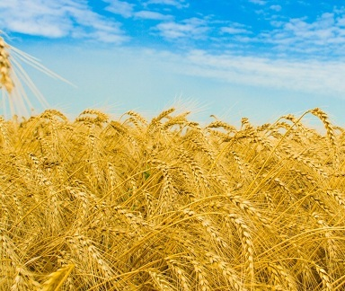
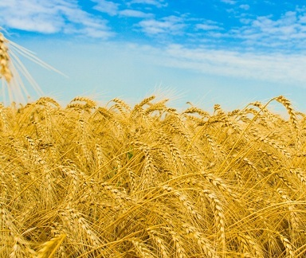

Piscicultura
Din punctul de vedere al potențialului piscicol, România se situează pe primul loc în Europa de sud-est, cu o rețea hidrografică de 843.710 ha. În România există, răspandite în 38 de județe, peste 84.500 hectare de crescătorii piscicole, mai mult de 15.500 ha pepiniere piscicole, 300 de ferme piscicole și 60 de păstrăvării, cu o suprafață de 44 ha. Principalele specii de pești
 cultivate sunt: crap comun, caras, ciprinide asiatice (sânger, cosaș, novac), păstrăv-curcubeu, indigen, fântânel, șalău, știucă, somn, iar producția din acvacultură era de circa 17.000 de tone anual.
cultivate sunt: crap comun, caras, ciprinide asiatice (sânger, cosaș, novac), păstrăv-curcubeu, indigen, fântânel, șalău, știucă, somn, iar producția din acvacultură era de circa 17.000 de tone anual.
Producția de pește din România a scăzut constant începand cu anul 1989. Astfel, dacă imediat după Revoluție, producția națională de pește din ape amenajate se cifra la 50-60.000 de tone anual, în anul 2006, aceasta era de numai 8.000 de tone.Și pescuitul din Marea Neagră s-a diminuat considerabil - de la 4.431 tone pește, în 1998, până la 2.026 tone, în anul 2005.
Până la sfârșitul anilor 1990, în România existau multe fabrici de conserve și preparate din pește, inclusiv câteva foarte mari, precum cele de la Tulcea, Constanța, Brăila, Galați și București, care asigurau întregul consum intern și furnizau și mari cantități la export. Începând din anul 1997, rând pe rând, aceste fabrici au intrat în faliment și au fost închise.
Consumul anual de pește din România se cifrează la 70.000 de tone de pește, dintre care doar 20.000 de tone reprezintă producție internă, restul fiind din import. Românii consumă, în medie, circa trei kilograme de pește pe cap de locuitor anual, ceea ce este cu mult sub media europeană, de 10 kilograme pe an.